Last updated: 2020-09-10
Checks: 7 0
Knit directory: scATACseq-topics/
This reproducible R Markdown analysis was created with workflowr (version 1.6.2). The Checks tab describes the reproducibility checks that were applied when the results were created. The Past versions tab lists the development history.
Great! Since the R Markdown file has been committed to the Git repository, you know the exact version of the code that produced these results.
Great job! The global environment was empty. Objects defined in the global environment can affect the analysis in your R Markdown file in unknown ways. For reproduciblity it’s best to always run the code in an empty environment.
The command set.seed(20200729) was run prior to running the code in the R Markdown file. Setting a seed ensures that any results that rely on randomness, e.g. subsampling or permutations, are reproducible.
Great job! Recording the operating system, R version, and package versions is critical for reproducibility.
Nice! There were no cached chunks for this analysis, so you can be confident that you successfully produced the results during this run.
Great job! Using relative paths to the files within your workflowr project makes it easier to run your code on other machines.
Great! You are using Git for version control. Tracking code development and connecting the code version to the results is critical for reproducibility.
The results in this page were generated with repository version 658edd6. See the Past versions tab to see a history of the changes made to the R Markdown and HTML files.
Note that you need to be careful to ensure that all relevant files for the analysis have been committed to Git prior to generating the results (you can use wflow_publish or wflow_git_commit). workflowr only checks the R Markdown file, but you know if there are other scripts or data files that it depends on. Below is the status of the Git repository when the results were generated:
Ignored files:
Ignored: .Rhistory
Ignored: .Rproj.user/
Untracked files:
Untracked: code/plots.R
Unstaged changes:
Modified: code/functions_for_assessing_fits.R
Modified: scripts/fit_all_models_Cusanovich2018.sh
Note that any generated files, e.g. HTML, png, CSS, etc., are not included in this status report because it is ok for generated content to have uncommitted changes.
These are the previous versions of the repository in which changes were made to the R Markdown (analysis/plots_Lareau2019_bonemarrow.Rmd) and HTML (docs/plots_Lareau2019_bonemarrow.html) files. If you’ve configured a remote Git repository (see ?wflow_git_remote), click on the hyperlinks in the table below to view the files as they were in that past version.
| File | Version | Author | Date | Message |
|---|---|---|---|---|
| Rmd | 658edd6 | kevinlkx | 2020-09-10 | update structure plots |
| html | 4a4005a | kevinlkx | 2020-09-10 | Build site. |
| Rmd | f684ae9 | kevinlkx | 2020-09-10 | initial structure plots |
Here we examine and compare the topic modeling results for the bone marrow scATAC-seq dataset from Lareau et al (2019)
The goal of this analysis is to illustrate how the topic models fitted to these data sets can be used to learn about structure in the data.
In particular, we would like to identify clusters, and interpret clusters and topics as “cell types” or “regulatory programs”.
Load the packages used in the analysis below, as well as additional functions that will be used to generate some of the plots.
library(tools)
library(dplyr)
library(fastTopics)
library(ggplot2)
library(cowplot)
source("code/plots.R")set.seed(1)Load the data
data.dir <- "/project2/mstephens/kevinluo/scATACseq-topics/data/Lareau_2019/bone_marrow/processed_data/"
load(file.path(data.dir, "Lareau_2019_bonemarrow.RData"))
cat(sprintf("%d x %d counts matrix.\n",nrow(counts),ncol(counts)))
rm(counts)
# 136463 x 146860 counts matrix.About the samples: The study used dsciATAC-seq to profile bone marrow mononuclear cells (BMMCs) from two human donors before (untreated controls) and after stimulation, producing chromatin accessibility profiles for a total of 136,463 cells that passed quality filters.
Conditions: 1) Resting 2) Stimulated
samples$Condition <- as.factor(samples$Condition)
table(samples$Condition)
#
# Resting Stimulated
# 60495 7596815 de novo-defined clusters covering known hematopoietic cell types:
samples$Cluster <- as.factor(samples$Cluster)
table(samples$Cluster)
#
# B CD4 CD8 CLP Collision Ery-early Ery-late HSPC
# 4732 38420 15951 627 3506 4629 2269 5569
# HSPC-ery Mono-1 Mono-2 NK pDC preB proB
# 2253 13933 12699 14127 2154 12612 2982Load the results of running fit_poisson_nmf on the Lareau2019 data, with different algorithms, and for various choices of \(k\) (the number of “topics”).
out.dir <- "/project2/mstephens/kevinluo/scATACseq-topics/output/Lareau_2019"
load(file.path(out.dir, "/compiled.fits.Lareau2019_bonemarrow.RData"))The structure plots summarize the topic proportions in the resting (control) and stimulated conditions.
Structure plot for cells in the resting condition, grouped by different cell labels (15 de novo-defined clusters):
\(k = 2\):
fit_poisson_nmf <- fits[["fit-Lareau2019_bonemarrow-scd-ex-k=2"]]
rows <- sort(which(samples$Condition == "Resting"))
p.structure_plot <- structure_plot(select(poisson2multinom(fit_poisson_nmf), loadings = rows),
grouping = samples[rows,"Cluster"],
n = 2000,gap = 40,num_threads = 4,verbose = FALSE)
print(p.structure_plot)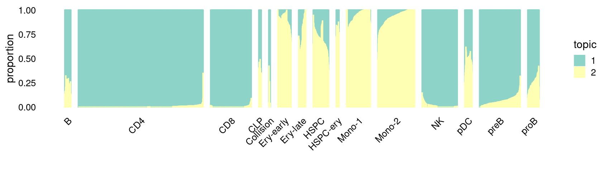
\(k = 3\):
fit_poisson_nmf <- fits[["fit-Lareau2019_bonemarrow-scd-ex-k=3"]]
rows <- sort(which(samples$Condition == "Resting"))
p.structure_plot <- structure_plot(select(poisson2multinom(fit_poisson_nmf), loadings = rows),
grouping = samples[rows,"Cluster"],
n = 2000,gap = 40,num_threads = 4,verbose = FALSE)
print(p.structure_plot)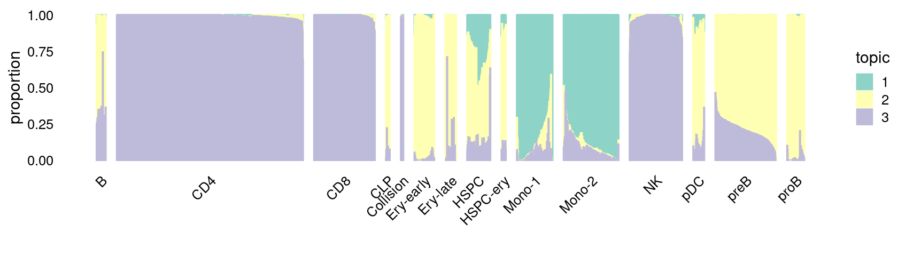
\(k = 4\):
fit_poisson_nmf <- fits[["fit-Lareau2019_bonemarrow-scd-ex-k=4"]]
rows <- sort(which(samples$Condition == "Resting"))
p.structure_plot <- structure_plot(select(poisson2multinom(fit_poisson_nmf), loadings = rows),
grouping = samples[rows,"Cluster"],
n = 2000,gap = 40,num_threads = 4,verbose = FALSE)
print(p.structure_plot)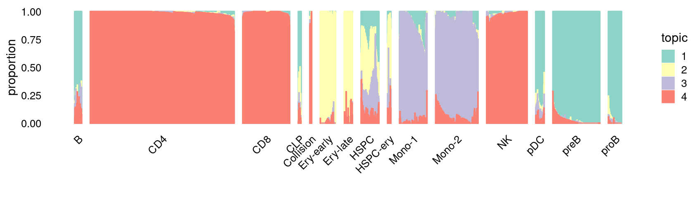
\(k = 5\):
fit_poisson_nmf <- fits[["fit-Lareau2019_bonemarrow-scd-ex-k=5"]]
rows <- sort(which(samples$Condition == "Resting"))
p.structure_plot <- structure_plot(select(poisson2multinom(fit_poisson_nmf), loadings = rows),
grouping = samples[rows,"Cluster"],
n = 2000,gap = 40,num_threads = 4,verbose = FALSE)
print(p.structure_plot)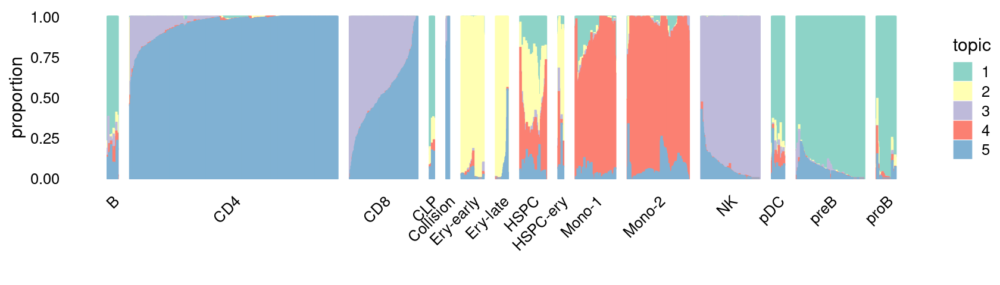
\(k = 6\):
fit_poisson_nmf <- fits[["fit-Lareau2019_bonemarrow-scd-ex-k=6"]]
rows <- sort(which(samples$Condition == "Resting"))
p.structure_plot <- structure_plot(select(poisson2multinom(fit_poisson_nmf), loadings = rows),
grouping = samples[rows,"Cluster"],
n = 2000,gap = 40,num_threads = 4,verbose = FALSE)
print(p.structure_plot)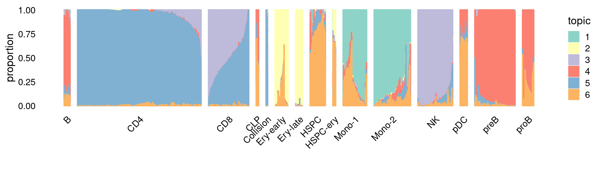
\(k = 7\):
fit_poisson_nmf <- fits[["fit-Lareau2019_bonemarrow-scd-ex-k=7"]]
rows <- sort(which(samples$Condition == "Resting"))
p.structure_plot <- structure_plot(select(poisson2multinom(fit_poisson_nmf), loadings = rows),
grouping = samples[rows,"Cluster"],
n = 2000,gap = 40,num_threads = 4,verbose = FALSE)
print(p.structure_plot)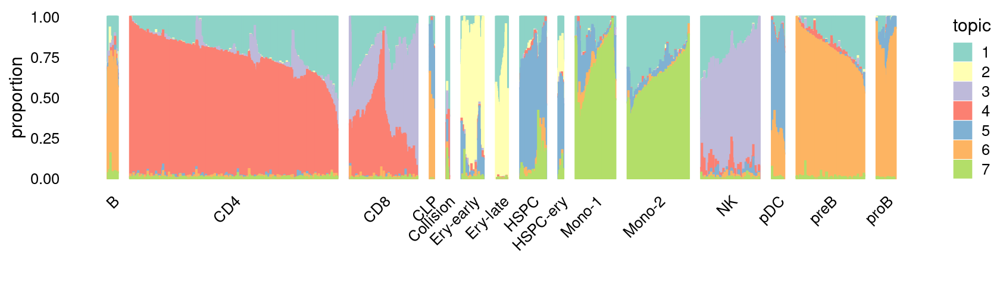
\(k = 8\):
fit_poisson_nmf <- fits[["fit-Lareau2019_bonemarrow-scd-ex-k=8"]]
rows <- sort(which(samples$Condition == "Resting"))
p.structure_plot <- structure_plot(select(poisson2multinom(fit_poisson_nmf), loadings = rows),
grouping = samples[rows,"Cluster"],
n = 2000,gap = 40,num_threads = 4,verbose = FALSE)
print(p.structure_plot)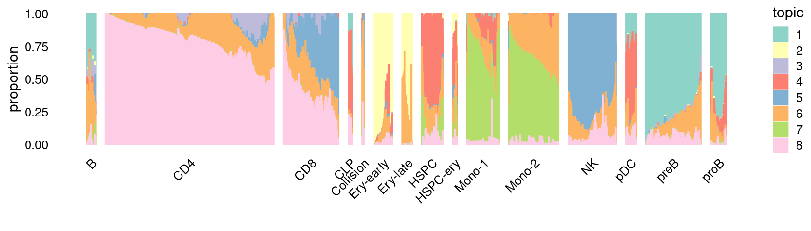
\(k = 9\):
fit_poisson_nmf <- fits[["fit-Lareau2019_bonemarrow-scd-ex-k=9"]]
rows <- sort(which(samples$Condition == "Resting"))
p.structure_plot <- structure_plot(select(poisson2multinom(fit_poisson_nmf), loadings = rows),
grouping = samples[rows,"Cluster"],
n = 2000,gap = 40,num_threads = 4,verbose = FALSE)
print(p.structure_plot)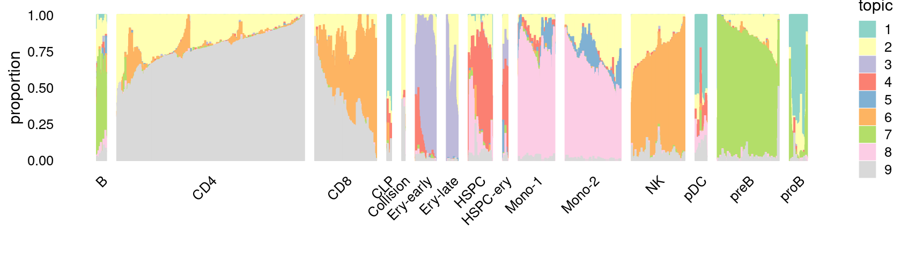
Structure plot for cells in the stimulated condition, grouped by different cell labels:
\(k = 2\):
fit_poisson_nmf <- fits[["fit-Lareau2019_bonemarrow-scd-ex-k=2"]]
rows <- sort(which(samples$Condition == "Stimulated"))
p.structure_plot <- structure_plot(select(poisson2multinom(fit_poisson_nmf), loadings = rows),
grouping = samples[rows,"Cluster"],
n = 2000,gap = 40,num_threads = 4,verbose = FALSE)
print(p.structure_plot)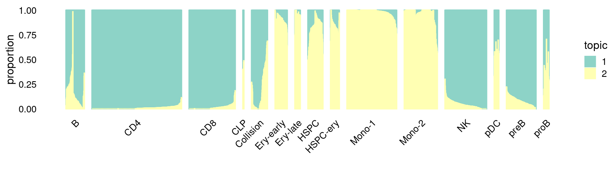
\(k = 3\):
fit_poisson_nmf <- fits[["fit-Lareau2019_bonemarrow-scd-ex-k=3"]]
rows <- sort(which(samples$Condition == "Stimulated"))
p.structure_plot <- structure_plot(select(poisson2multinom(fit_poisson_nmf), loadings = rows),
grouping = samples[rows,"Cluster"],
n = 2000,gap = 40,num_threads = 4,verbose = FALSE)
print(p.structure_plot)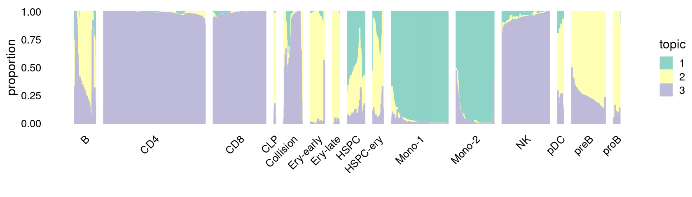
\(k = 4\):
fit_poisson_nmf <- fits[["fit-Lareau2019_bonemarrow-scd-ex-k=4"]]
rows <- sort(which(samples$Condition == "Stimulated"))
p.structure_plot <- structure_plot(select(poisson2multinom(fit_poisson_nmf), loadings = rows),
grouping = samples[rows,"Cluster"],
n = 2000,gap = 40,num_threads = 4,verbose = FALSE)
print(p.structure_plot)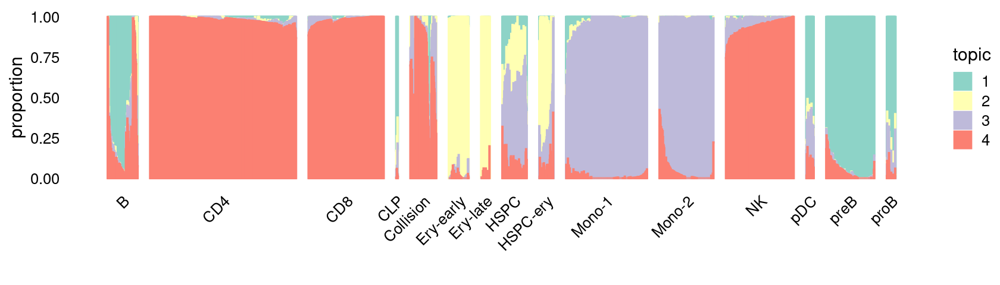
\(k = 5\):
fit_poisson_nmf <- fits[["fit-Lareau2019_bonemarrow-scd-ex-k=5"]]
rows <- sort(which(samples$Condition == "Stimulated"))
p.structure_plot <- structure_plot(select(poisson2multinom(fit_poisson_nmf), loadings = rows),
grouping = samples[rows,"Cluster"],
n = 2000,gap = 40,num_threads = 4,verbose = FALSE)
print(p.structure_plot)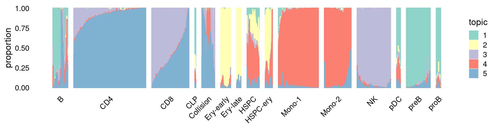
\(k = 6\):
fit_poisson_nmf <- fits[["fit-Lareau2019_bonemarrow-scd-ex-k=6"]]
rows <- sort(which(samples$Condition == "Stimulated"))
p.structure_plot <- structure_plot(select(poisson2multinom(fit_poisson_nmf), loadings = rows),
grouping = samples[rows,"Cluster"],
n = 2000,gap = 40,num_threads = 4,verbose = FALSE)
print(p.structure_plot)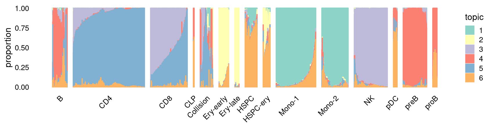
\(k = 7\):
fit_poisson_nmf <- fits[["fit-Lareau2019_bonemarrow-scd-ex-k=7"]]
rows <- sort(which(samples$Condition == "Stimulated"))
p.structure_plot <- structure_plot(select(poisson2multinom(fit_poisson_nmf), loadings = rows),
grouping = samples[rows,"Cluster"],
n = 2000,gap = 40,num_threads = 4,verbose = FALSE)
print(p.structure_plot)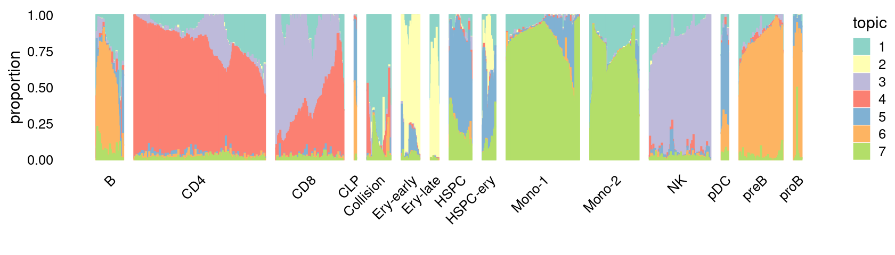
\(k = 8\):
fit_poisson_nmf <- fits[["fit-Lareau2019_bonemarrow-scd-ex-k=8"]]
rows <- sort(which(samples$Condition == "Stimulated"))
p.structure_plot <- structure_plot(select(poisson2multinom(fit_poisson_nmf), loadings = rows),
grouping = samples[rows,"Cluster"],
n = 2000,gap = 40,num_threads = 4,verbose = FALSE)
print(p.structure_plot)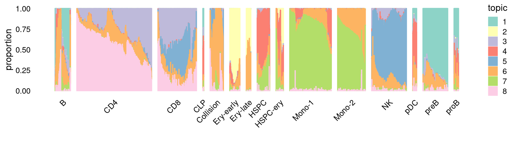
\(k = 9\):
fit_poisson_nmf <- fits[["fit-Lareau2019_bonemarrow-scd-ex-k=9"]]
rows <- sort(which(samples$Condition == "Stimulated"))
p.structure_plot <- structure_plot(select(poisson2multinom(fit_poisson_nmf), loadings = rows),
grouping = samples[rows,"Cluster"],
n = 2000,gap = 40,num_threads = 4,verbose = FALSE)
print(p.structure_plot)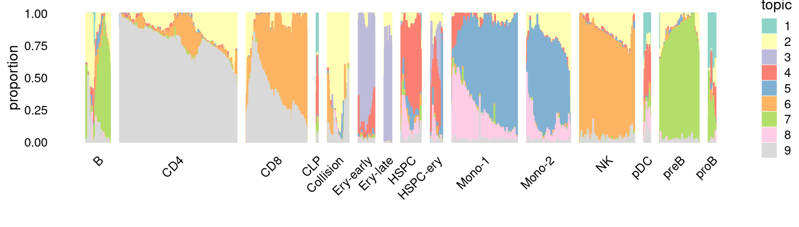
sessionInfo()
# R version 3.5.1 (2018-07-02)
# Platform: x86_64-pc-linux-gnu (64-bit)
# Running under: Scientific Linux 7.4 (Nitrogen)
#
# Matrix products: default
# BLAS/LAPACK: /software/openblas-0.2.19-el7-x86_64/lib/libopenblas_haswellp-r0.2.19.so
#
# locale:
# [1] LC_CTYPE=en_US.UTF-8 LC_NUMERIC=C
# [3] LC_TIME=en_US.UTF-8 LC_COLLATE=en_US.UTF-8
# [5] LC_MONETARY=en_US.UTF-8 LC_MESSAGES=en_US.UTF-8
# [7] LC_PAPER=en_US.UTF-8 LC_NAME=C
# [9] LC_ADDRESS=C LC_TELEPHONE=C
# [11] LC_MEASUREMENT=en_US.UTF-8 LC_IDENTIFICATION=C
#
# attached base packages:
# [1] tools stats graphics grDevices utils datasets methods
# [8] base
#
# other attached packages:
# [1] cowplot_1.0.0 ggplot2_3.3.0 fastTopics_0.3-163 dplyr_0.8.5
# [5] workflowr_1.6.2
#
# loaded via a namespace (and not attached):
# [1] progress_1.2.2 tidyselect_0.2.5 xfun_0.14 purrr_0.3.4
# [5] lattice_0.20-38 colorspace_1.4-1 vctrs_0.3.0 viridisLite_0.3.0
# [9] htmltools_0.4.0 yaml_2.2.0 MCMCpack_1.4-4 plotly_4.8.0
# [13] rlang_0.4.6 later_1.0.0 pillar_1.4.4 withr_2.1.2
# [17] glue_1.4.1 lifecycle_0.2.0 stringr_1.4.0 MatrixModels_0.4-1
# [21] munsell_0.5.0 gtable_0.3.0 htmlwidgets_1.5.1 coda_0.19-2
# [25] evaluate_0.14 labeling_0.3 knitr_1.28 SparseM_1.77
# [29] httpuv_1.5.3.1 quantreg_5.36 irlba_2.3.3 Rcpp_1.0.4.6
# [33] promises_1.1.0 backports_1.1.7 scales_1.1.1 RcppParallel_4.4.3
# [37] jsonlite_1.6 farver_2.0.3 fs_1.3.1 mcmc_0.9-7
# [41] hms_0.4.2 digest_0.6.25 stringi_1.4.6 Rtsne_0.15
# [45] ggrepel_0.8.2 grid_3.5.1 rprojroot_1.3-2 quadprog_1.5-5
# [49] magrittr_1.5 lazyeval_0.2.2 tibble_3.0.1 tidyr_0.8.3
# [53] crayon_1.3.4 whisker_0.4 pkgconfig_2.0.3 MASS_7.3-51.6
# [57] ellipsis_0.3.1 Matrix_1.2-15 prettyunits_1.1.1 data.table_1.12.8
# [61] assertthat_0.2.1 rmarkdown_2.1 httr_1.4.1 R6_2.4.1
# [65] git2r_0.27.1 compiler_3.5.1